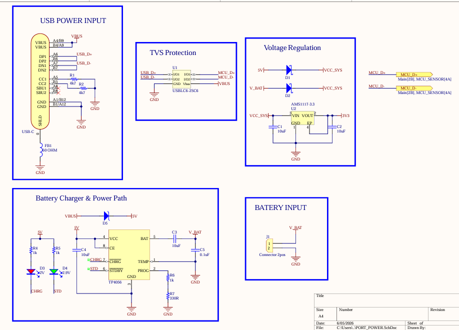
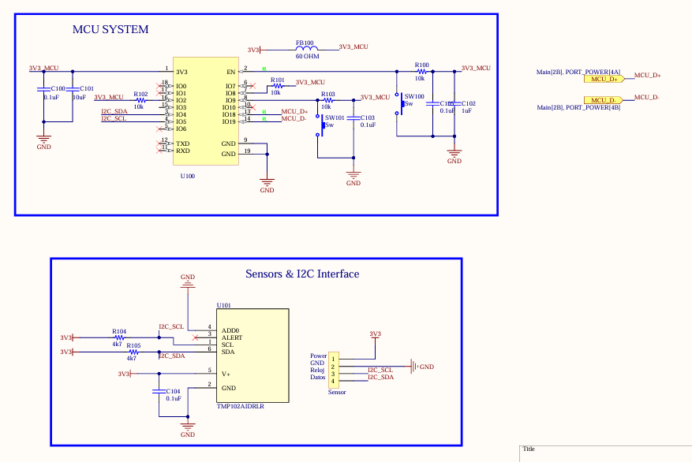
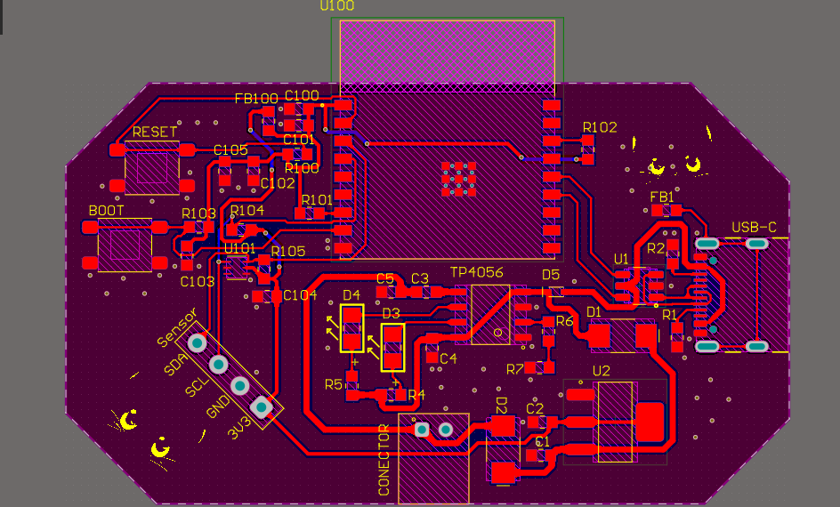
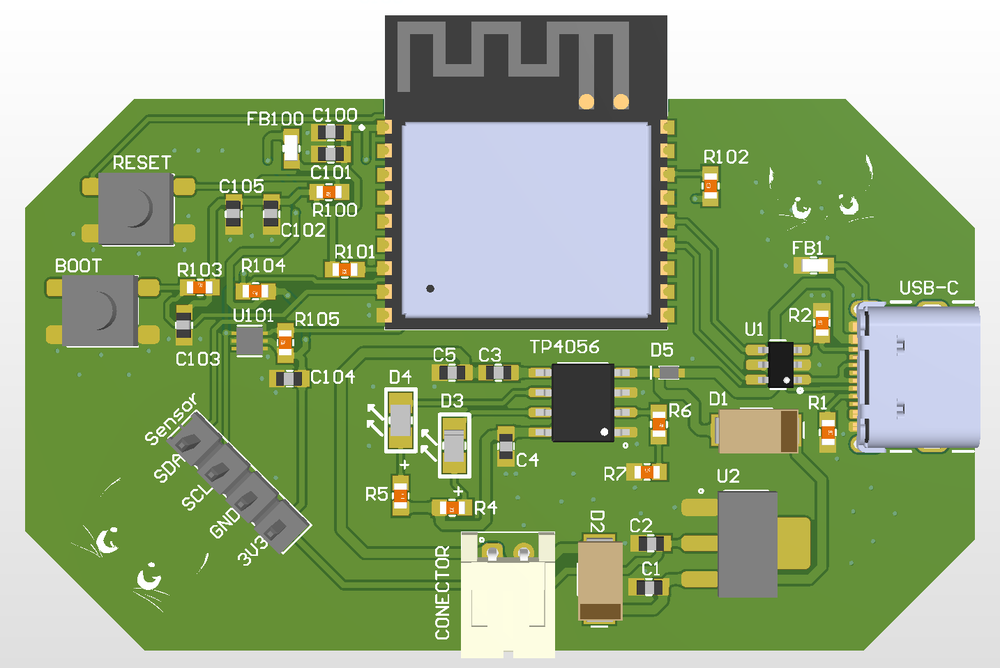

Diseñador de Hardware
Laura Sofía Castaño Pineda
Institución Académica
Universidad Nacional de Colombia
lacastanop@unal.edu.co
Los entornos de trabajo y oficinas cerradas padecen del **Síndrome del Edificio Enfermo** por falta de ventilación, acumulando dióxido de carbono y Compuestos Orgánicos Volátiles (COVs) que disminuyen el rendimiento cognitivo de los empleados.
Un nodo de sensado electrónico ultra compacto que monitorea de forma autónoma el confort térmico y gases nocivos mediante dos sensores especializados, reportando de forma inalámbrica a la nube.
Modo de Operación: Autonomía por batería portátil de Li-Po con circuito integrado de recarga vía puerto USB-C.
Haz clic en cualquiera de los bloques interactivos del diagrama de la izquierda para conocer los detalles, voltajes de operación y direccionamientos lógicos del bus.
💡 Al utilizar un único bus compartido I2C, se optimiza el espacio de pistas de enrutamiento y puertos GPIO libres.
El sistema de potencia se ha dimensionado bajo un estricto margen de corriente máxima para evitar la inestabilidad por caídas de tensión bruscas:
* Conmutación automática de fuente (Power Path) implementada mediante diodos Schottky para evitar la descarga de la batería mientras se alimenta el equipo mediante el puerto USB-C.
Para asegurar el correcto funcionamiento del bus compartido I2C sin colisiones de datos, se realizó el mapeo de registros por hardware de cada transductor:
La combinación del ESP32-C3 y el sensor SGP30 ofrece una optimización clave del consumo energético, ya que el transductor se comunica de manera puramente digital, reduciendo la necesidad de convertidores analógico-digitales (ADC) encendidos permanentemente.
Se colocó un fusible térmico reseteable (PPTC) para impedir fallas catastróficas por sobrecorriente externa y un diodo TVS encargado de filtrar ruidos transitorios ESD producidos en la conexión física.
Un arreglo de diodos permite que el dispositivo elija automáticamente el USB como fuente principal de energía al ser enchufado, conmutando suavemente a la batería portátil Li-Po cuando se desconecta.


Se utilizó una perla de ferrita para aislar y blindar la alimentación de alta frecuencia del microcontrolador. Esto evita que el ruido electromagnético parásito del transceptor de radio Wi-Fi altere el cálculo de las lecturas digitales.
El SGP30 se alimenta de la línea de 3.3 V general regulada y se conecta a través del bus común en paralelo compartiendo las resistencias pull-up de 4.7kΩ del SCL y SDA.
El código principal fue estructurado utilizando las librerías oficiales del ecosistema **Espressif**. Se encarga de coordinar las siguientes etapas críticas:
// Lectura de Variables y Envío IoT
sgp30_measure_iaq(&sgp30_dev, &tvoc, &eco2);
tmp102_read_temp_c(&temp_c);
if (wifi_is_connected()) {
iot_client_publish_data(temp_c, tvoc, eco2);
}
esp_deep_sleep(10 * 1000000); // 10s Low-power sleep
Para asegurar un factor de forma ultra-compacto y transportable, las dimensiones finales de la placa de doble capa se definieron en **2410 mils de ancho por 1400 mils de alto** (aproximadamente 61.2 mm x 35.6 mm).
Las pistas de la batería y la carga principal se ruteraron a **30 mils** para minimizar impedancias. Las pistas de potencia de alimentación de la MCU se trazaron a **15 mils** para tolerar de manera segura transitorios de hasta 500 mA del Wi-Fi. Las pistas normales de señal (como datos I2C) se rutearon a un ancho estándar de **10 mils**.


El conector de carga USB-C, el puerto JST de la batería Li-Po y el Header externo para acoplar el sensor de calidad del aire SGP30 se colocaron cerca de los bordes para facilitar su ensamblado e integración mecánica.
El extremo donde se ubica la antena de PCB integrada del ESP32-C3 cuenta con un espacio libre de planos de cobre masivos o componentes metálicos altos, garantizando un alcance óptimo para la transmisión Wi-Fi.
Para maximizar la autonomía de la batería a niveles industriales, planeo incorporar un transistor **MOSFET de canal P** como interruptor de potencia. De esta forma, se podrá desactivar de manera absoluta la alimentación del sensor de calidad del aire SGP30 durante los ciclos prolongados de sueño profundo (*Deep Sleep*) del ESP32-C3.
DS01 Espressif Systems (2026): ESP32-C3-WROOM-02 Hardware Datasheet v1.7. Directrices de pines de arranque, ruidos de acoplamiento de RF e inicialización del stack Wi-Fi.
DS02 Sensirion AG (2020): Sensirion Gas Sensors SGP30 Datasheet. Registro de comandos para cálculo de TVOC y eCO2, inicialización I2C y especificaciones térmicas.
DS03 Texas Instruments (2015): TMP102 Digital Temperature Sensor with SMBus and I2C Interface Datasheet.
PCB01 JLCPCB (2026): Capabilities & Design Rules Reference. Límites de fabricación para tarjetas estándar FR4 (ancho mínimo de pista/aislamiento de 5 mils, agujeros mínimos de vía de 0.3 mm, cobre exterior de 1 oz).